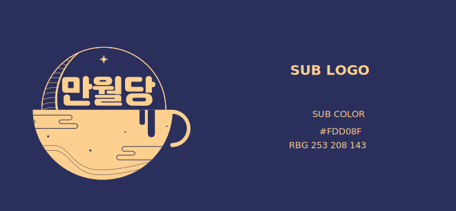

달 + 커피잔 = 로고
- 
-
밤을 지켜주는 달
해가 지면, 밤이 항상 찾아옵니다.
그럴때마다 달은 어둠보다 한발 앞서 길잡이가 되어주거나
잠들지 못해 뒤척이는 꿈의 편안한 휴식처가 되기도 합니다.햇빛에 가려지더라도 항상 하늘에 떠있으며
우리의 곁에 있어주는 달은
만월당의 모티프가 되었습니다.
-
꿈을 담은 커피잔
만월당은 그런 달을 품은
커피를 만들고자 하는 카페입니다.빠르게 지나가는 현대사회 속에서도
힘들고 지칠 때가 되면 언제나 우리의 일상 속에서
달과 같은 편안한 휴식처을 되고자하는
꿈을 담은 커피잔을 모티프로 삼았습니다.
원산지
만월당 내에서 사용하는 특별한 원두는 단시간 로스팅 하면
부드러운 코코아의 섬세한 뉘앙스와 살짝 볶은 견과류 향이 살아나는
고품질의 라틴 아메리카 원두 블랜드를 사용했습니다.
은은하고 달콤한 풍미가 살아있는 이 커피는 차분하고 편안하게 즐길 수 있습니다.
먹기 편한 용도로 제작된 스틱타입 FULLMOON 커피는 선물용으로도 용이하며,
만월당에서 사용하는 라텐 아메리카 원두와 그린커피빈추출물을 혼합하여
일상 속에서도 쉽게 만월당의 풍미를 편안하게 느낄 수 있습니다.
만월당의 원두에서 맛볼수 있는 특별한 효능
-
그린커피빈
로스팅 직전의 생두를 뜻하는 그린커피빈에는
클로로겐산이 풍부하게 들어있어
지방축적억제, 신진대사를 활발하게 만들어줍니다.
자는 동안에도 활발한 신진대사를 도와줍니다.
-
L 테아닌
녹차에 많이 함유되어 있는 아미노산으로
뇌의 흥분을 억제하고 신경을 진정시키는
효과가 있어 취침 전 스트레스로 인한
긴장을 완화시키는 데에 도움을 줄 수 있습니다.
-
키토산
키토산에는 음식안에 들어있는
식이지방을 흡착해 배출해주는 효과와
콜레스테롤 수치를 조절해주고
염증을 억제해주는 효능을 가지고 있습니다.
-


-
개인정보취급방침
주소 : 부산광역시 금정구 금정대로 123
대표이사 : 박상경 / 사업자등록번호 : 000-00-00000COPYRIGHT (주)만월당 ALL RIGHTS RESERVED.